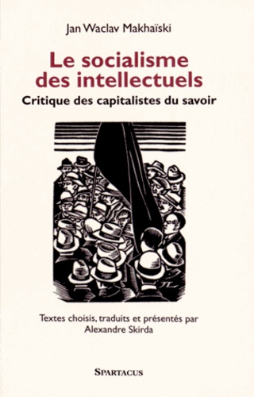

Ver também
-
"“Le Socialisme des Intellectuels”, de Jan Waclav Makhaïski, trad. e ed. Alexandre Skirda, Les Éditions de Paris, 2001. Makhaïski, autor polonês que escrevia em russo, foi militante esquerdista e conheceu bem os meios revolucionários russos e internacionais no fim do século XIX. Das suas observações e experiências, tirou as seguintes conclusões: (1) a classe revolucionária efetiva não eram os proletários, mas os intelectuais; (2) eles não eliminariam o capitalismo, mas o modificariam até que ele começasse a trabalhar mais em proveito deles do que dos capitalistas. Batata. Não deu outra."
Casta de malditos (http://www.olavodecarvalho.org/semana/070430dc.html)